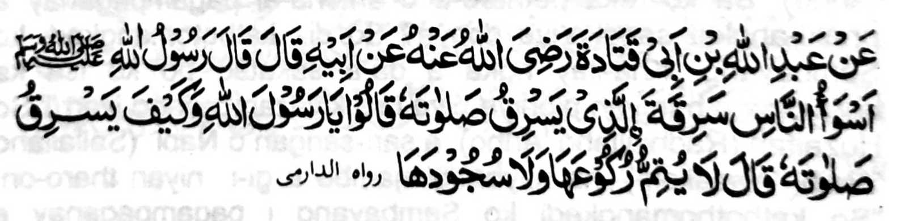

Piyanothol o Abdullah bin Abi Qatadah a piyanothol o ama iyan a pitharo iyan a pitharo o Rasulollah (Sallallaho ‘Alaihi Wasallam), "Aya miyakarata-rata a tekhao ko manga manosiya na so pephamanekhawan niyan so Sambayang iyan" Pitharo iran (a manga Sahabah), "Ya Rasulollah na anda manaya-i kapekha-panekhawi niyan ko Sambayang iyan?" Pitharo iyan "Igira a da niyan tarotopa so Ruku iyan a go so Sujud iyan."
Madakel pen a manga Hadith a lagid aya sa ma-ana. So kapamanekhao na tanto a piyaka-ya'-ya' a ola-ola ago so tekhao na gi-i khakagowada o langon o tao Arrtona-ai panda-pat ka ko tao a bithowan sa miyakarata-rata a tekhao, na ayapen a mitharo-on na da-a salakao a rowar ko Nabi?
So Abu Darda (Radhiallaho 'Anho) na piyanothol iyan, "Miyaka-isa na lomiyangag so Nabi (Sallallaho Alaihi Wasallam) sa langit na pitharo iyan, 'So 'Ilmo ko Agama na maga-an den ma-angkat sangka-iya donya.’ So Zyad (Radhiallaho ’Anho) na ped ro-o a makadadarepa na pitharo iyan, 'Anda manaya-i kakha-angkat o 'Ilmo ko Agama, Hay Nabi o Allah (Sallallaho 'Alaihi Wasallam), a sekami na ipephangenda-o ami so Qur'an ko manga wata ami na giyangka-iya a ola-ola na mipethanan nami taman sa pekhababadan rekami?' So Nabi (Sallallaho 'Alaihi Wasallam) na pitharo iyan non, 'Hay Zyad! lalayon aken seka ibebetad sa maongangen a tao. Bangka da ma-ilay so manga Yahodi ago so manga Nasrani a ipephangenda-o iran mambo so kitab iran ko manga wata iran? lno miyakaren naya ko kiyandarodos iran?' So isa ko manga morit o Abu Darda (Radhiallaho 'Anho) na pitharo iyan, "Oriyan o kiyanegami sangka-iya Hadith pho-on ko Abu Darda (Radhiallaho 'Anho) na somiyong ako si-i ko Ubaida (Radhiallaho 'Anho) na piyanothol aken non angka-iya a Hadith. Pitharo iyan, 'Benar so Abu Darda (Radhiallaho 'Anho). Ba ko reka petharo-a o antona-ai pagampaganay a phaki-angkat sangka-iya donya? So di kathotomangkedi ko Sambayang. Kha-ilay ngka a da-a sakatao bo ko isa ka barajoma a baniyan piphiya-piya-i so kiyazambayang iyan.'" So Huzaifah (Radhiallaho 'Anho), a sari-sarigan o Nabi (Sallallaho 'Alaihi Wasallam), na miyaneg mambo a gi-i niyan tharo-on, "So kathothomangkedi ko Sambayang i pagampaganay a khada."
Miya-aloy sa Hadith, "So Allah na di Niyan phamakinegen so Sambayang a so manga Ruku ago Sajdah na da kaphiya-piya-i."
Tanto a mailot a osayan ko gi-i kaphiya-piya-i ko Sambayang. Si-i ko sorat o Shaikh Ahmad Sarhandi (Rahmatullahi ’Alaihi). So osayan niyan sangka-iya bandingan na aya kiya-imponan ko kala-an sangka-iya sorat. Si-i ko isa on na pitharo iyan, "Ped a paliyogat so kasiyapa tano sa kapakan-dedeketa o manga kemer o lima ko masa a Sajdah ago so kabebekar iran igira si-i ko Ruku. Giyangka-iya bitikan na kena ba da-a antap iyan." Pitharo iyan pen, "So kipa-aren ko pengilay-layan sa katatap iyan si-i ko Sojodan tano ko masa pen a kapakatitindeg, go si-i ko mbala a a-i ko masa a Ruku go si-i ko ngirong ko masa a kasosodod, go si-i ko mbala a lima ko masa a ka-o-ontod, na mala-a khi-ogop iyan ko kate-tekhes o pamikiran si-i ko Sambayang." Giyangka-iya a manga bitikan, a matag Mustahab (Sunnat) na maphakala iyan so arga o Sambayang tano, na antona-ai pandapat ka ko kala a kalbihan a khakowa tano opama a siyapa tano pen so manga ped a bitikan melagid o Sunnat odi na rokon a mala-i kipantag